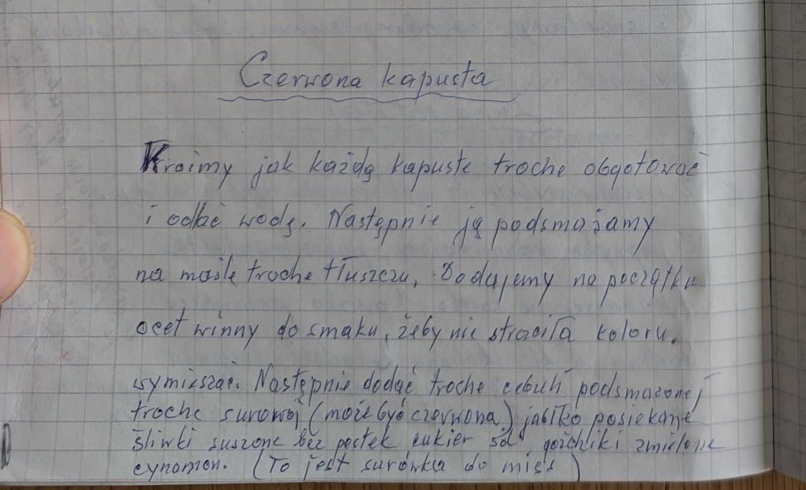
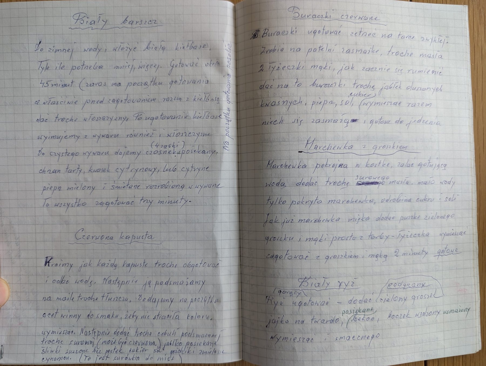

Czerwona kapusta – surówka


Składniki
- czerwona kapusta
- masło lub tłuszcz
- ocet winny
- cebula (podsmażona i surowa, może być czerwona)
- jabłko
- suszone śliwki bez pestek
- cukier, sól
- zmielone goździki
- cynamon
Przygotowanie
- Kapustę pokroić, trochę obgotować i odlać wodę.
- Podsmażyć na maśle; na początku dodać ocet winny do smaku, żeby kapusta nie straciła koloru, wymieszać.
- Dodać trochę podsmażonej i trochę surowej cebuli, posiekane jabłko i suszone śliwki.
- Doprawić cukrem, solą, zmielonymi goździkami i cynamonem.
Oryginalny zapis
Czerwona kapusta Kroimy jak każdą kapustę trochę obgotować i odlać wodę. Następnie ją podsmażamy na maśle trochę tłuszczu, Dodajemy na początku ocet winny do smaku, żeby nie straciła koloru. wymieszać. Następnie dodać trochę cebuli podsmażonej trochę surowej (może być czerwona) jabłko posiekane śliwki suszone bez pestek cukier sól goździki zmielone cynamon. (To jest surówka do mięs)